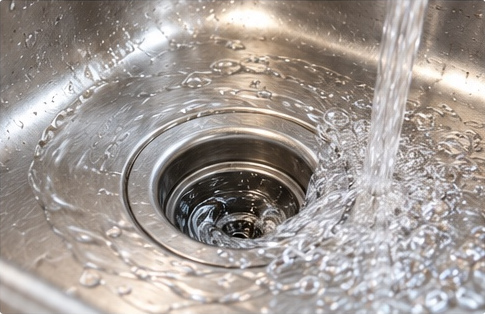

Slow Drains
Helping restore proper flow in sinks, tubs, and showers.
Clearing stubborn clogs and slow drains in kitchens, bathrooms, and other areas of your home.
Helping restore proper flow in sinks, tubs, and showers.
Clearing tough clogs that keep water from draining the way it should.
Helping prevent recurring buildup so your drains keep moving.

Smith Plumbing helps with clogged kitchen and bathroom drains, as well as slow drains throughout your home. Common issues like grease buildup, hair, soap scum, and other debris can cause drains to slow down or become completely blocked.
I work carefully to identify the cause and clear the problem, getting your water flowing again. You can count on Smith Plumbing for dependable service in De Smet and the surrounding rural communities.
Whether it is a backed-up sink or a slow shower drain, Smith Plumbing is here to help keep things flowing smoothly.